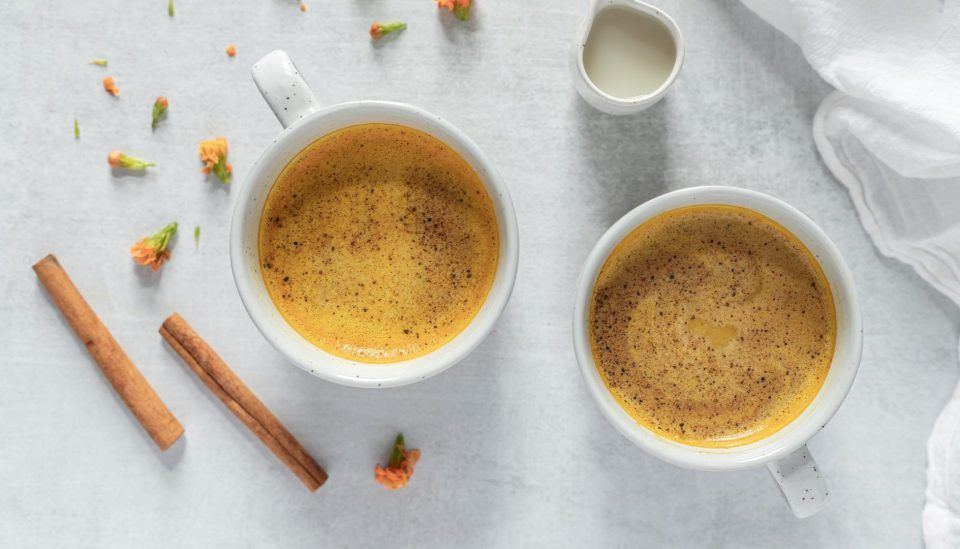

Golden Milk Recipe

The best solution for reducing inflammation in my body has been turmeric. This is a ver healthyy drink to be drank on the end of the day to increase physical and manteal recovery from the day and help with your sleep.
Ingredients
Makes 1 serving
- 1 cup hot water
- 2 tbsp. dehydrated coconut milk
- Honey or maple syrup to taste (backpacking tip: look for crystallized honey packets)
- Dash of cinnamon
- Dash of nutmeg
- Small peace o tumeric chopped (or 1/4 tb spoon of tumeric powder
Directions
- Heat up the water and add it to your mug along with the Turmeric
- Add the dehydrated coconut milk and blend it well.
- If you’re using regular dehydrated dairy milk, be sure to let your water cool slightly before adding the milk or the milk will curdle.
- Add honey or maple syrup until you achieve the sweetness you prefer.
- Spice it um with a dash of cinnamon and nutmeg.
Tip: Before my trips, I prepackage the measured amount for each ingredient in small baggies to minimize the waste and weight in the backcountry.